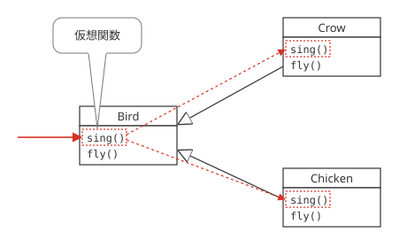
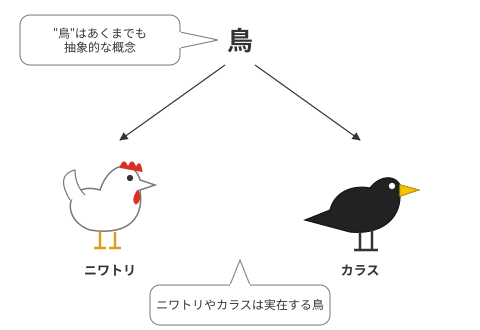
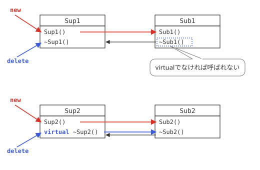
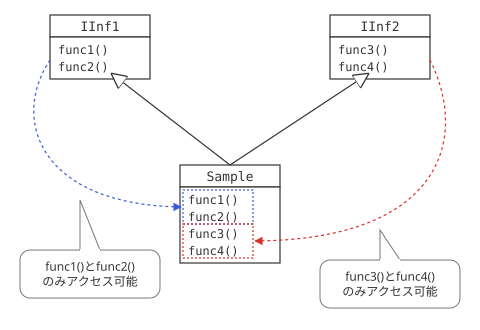

仮想関数
オーバーライド再び
仮想関数について説明する前に、少し継承に関して復習をしてみましょう。基本編の第6日目で学んだとおり、クラスは、継承によって、あるクラスの機能を受け継いだ、新しいクラスを作ることができました。
このとき、元になるクラスのことを、親クラスおよび、スーパークラス、その機能を受け継いだクラスのことを、子クラスおよび、サブクラスと呼びました。このとき、サブクラスの中に、スーパークラスと同一の名前、同一の引数、同一の戻り値を持つメンバ関数があった場合、これをオーバーライドと言い、サブクラスでは、そちらで定義された処理が優先されました。
仮想関数
しかし、ここに一つの問題点があります。それは、スーパークラスからサブクラスのメンバ関数を呼び出すことができないという点です。例えば、鳥というクラスがあったとします。その場合、それを継承したサブクラスとして考えられるのは、「にわとり」や「カラス」、「はと」といったものでしょう。
さらに、「鳥」というクラスには、「鳴く」というメソッドが存在したとします。その時、「にわとり」は「コケコッコー」と、「カラス」は「カァカァ」、といった具合に、鳴き方が異なります。ところが、プログラムによっては、その「鳥」の種類とは無関係に、「鳴く」というメソッドを呼び出したい場合があるのです。
そういった場合、従来のオーバーライドでは不可能です。そこで、「鳴く」というクラスのメソッドを呼び出したとき、その鳥の種類によって、柔軟に結果が変わるようにしたいものです。そういった場合、役に立つのが、仮想関数という概念です。
サンプルプログラム
では、仮想関数について説明する前に、実際に以下のサンプルプログラムを実行してみて下さい。
#ifndef BIRD_H
#define BIRD_H
#include <iostream>
#include <string>
using namespace std;
class Bird{
public:
// 「鳴く」関数（仮想関数）
virtual void sing(){ cout << "鳥が鳴きます" << endl; }
// 「飛ぶ」関数
void fly(){ cout << "鳥が飛びます" << endl; }
};
#endif // BIRD_H
#ifndef CHICKEN_H
#define CHICKEN_H
#include "bird.h"
// ニワトリクラス
class Chicken : public Bird{
public:
// 「鳴く」関数（仮想関数）
void sing(){ cout << "コケコッコー" << endl; }
// 「飛ぶ」関数
void fly(){ cout << "にわとりは飛べません" << endl; }
};
#endif // CHICKEN_H
#ifndef CROW_H
#define CROW_H
#include "bird.h"
// カラスクラス
class Crow : public Bird{
public:
// 「鳴く」関数（仮想関数）
void sing(){ cout << "カーカー" << endl; }
// 「飛ぶ」関数
void fly(){ cout << "カラスが飛びます" << endl; }
};
#endif // CROW_H
#include <iostream>
#include <string>
#include "bird.h"
#include "chicken.h"
#include "crow.h"
using namespace std;
int main(){
Bird* b1, *b2;
b1 = new Crow();
b2 = new Chicken();
b1->sing();
b1->fly();
b2->sing();
b2->fly();
return 0;
}
鳥が飛びます
コケコッコー
鳥が飛びます
virtual
Crowおよび、Chickenクラスの共通の親クラスである、Birdクラスは、sing()および、fly()というメソッドがあり、それらは共にオーバーライドされています。
しかし、sing()メソッドには、先頭にvirtual（バーチャル）という修飾子がついています。これにより、実行結果に違いがでます。
virtualがついたメソッドは、サブクラスに実装された、メンバ関数が実行されています。したがって、同じBirdクラスのポインタである、b1,b2で、同じメソッドを呼び出しても、実行結果が異なります。それに対し、virtualがついていない、fly()メソッドは、Birdクラスのものが呼び出され、それぞれの子クラスに実装されているものは呼び出されません。
このように、virtualがついたメンバ関数のことを、仮想関数（かそうかんすう）と呼びます。(図6-1.)

図6-1：仮想関数の働き
抽象クラスと純粋仮想関数
抽象的なクラスとメソッド
前述の「鳥」の例について再び考えてみましょう。「鳥」をあらわすクラスとして、「Bird」というクラスを作りました。しかし、考えてみて下さい。「にわとり」という名の鳥、もしくは、「カラス」という鳥は実在しますが、「鳥」という名の鳥は存在するでしょうか？
もちろん、そういったものは実際には存在しません。そのため、Birdクラスに、singというメソッドがあるのはわかりますが、そこに何らかの実装があるのは、なんだか変な感じがします。（図6-2.）

図6-2：抽象クラスの考え方
サンプルプログラム
そこで、C++言語では、そういった概念に対応できるような方法も用意されています。まずは、listex6-1の、bird.hを、以下のように変えてみてください。
#ifndef BIRD_H
#define BIRD_H
#include <iostream>
#include <string>
using namespace std;
class Bird{
public:
// 「鳴く」関数（仮想関数）
virtual void sing()=0;
// 「飛ぶ」関数
void fly(){ cout << "鳥が飛びます" << endl; }
};
#endif // BIRD_H
実行結果は、まったく変わらないはずです。
純粋仮想関数
12行目の仮想関数に注目してみてください。後ろに「=0」がついており、同時に実装が省略されています。こういった仮想関数のことを、純粋仮想関数(じゅんすいかそうかんすう)と言います。
純粋仮想関数は、メソッドそのものは存在するけれども、実装がない関数です。実装は、このクラスを継承した子クラスにされることが前提となっています。
抽象クラス
このような、純粋仮想関数を一つでも持つクラスのことを、抽象クラス（ちゅうしょうくらす）と言います。「にわとり」や「カラス」と違い、「鳥」という概念が抽象的な概念であったのと同じことです。
抽象クラスの最大の特徴は、インスタンスを作ることが出来ないということです。ためしに、更にmain.cppを、以下のように変えてみてください。
#include <iostream>
#include <string>
#include "bird.h"
#include "chicken.h"
#include "crow.h"
using namespace std;
int main(){
Bird* b1, *b2, *b3;
b1 = new Crow();
b2 = new Chicken();
b3 = new Bird();
b1->sing();
b1->fly();
b2->sing();
b2->fly();
return 0;
}
このプログラムは、１３行目でエラーが発生するはずです。なぜなら、純粋仮想関数を持つBirdクラスは、抽象クラスとなるため、インスタンスを生成できないからです。
仮想デストラクタ
サンプルプログラム
基本編第6日目で、デストラクタには、virtualをつけるようにする必要がある、ということを説明しました。ここでは、改めてその理由を説明しましょう。まずは、以下のサンプルを実行してみてください。
#ifndef SUP1_H
#define SUP1_H
#include <iostream>
using namespace std;
class Sup1{
public:
Sup1(){ cout << "Sup1のコンストラクタ" << endl; }
~Sup1(){ cout << "Sup1のデストラクタ" << endl; }
};
#endif // SUP1_H
#ifndef SUP2_H
#define SUP2_H
#include <iostream>
using namespace std;
class Sup2{
public:
Sup2(){ cout << "Sup2のコンストラクタ" << endl; }
virtual ~Sup2(){ cout << "Sup2のデストラクタ" << endl; }
};
#endif // SUP2_H
#ifndef SUB1_H
#define SUB1_H
#include "sup1.h"
class Sub1 : public Sup1{
public:
Sub1(){ cout << "Sub1のコンストラクタ" << endl; }
~Sub1(){ cout << "Sub1のデストラクタ" << endl; }
};
#endif // SUB1_H
#ifndef SUB2_H
#define SUB2_H
#include "sup2.h"
class Sub2 : public Sup2{
public:
Sub2(){ cout << "Sub2のコンストラクタ" << endl; }
~Sub2(){ cout << "Sub2のデストラクタ" << endl; }
};
#endif // SUB2_H
#include <iostream>
#include "sup1.h"
#include "sub2.h"
#include "sub1.h"
#include "sub2.h"
using namespace std;
int main(){
Sup1 *s1 = new Sub1();
Sup2 *s2 = new Sub2();
delete s1;
delete s2;
return 0;
}
Sub1のコンストラクタ
Sup2のコンストラクタ
Sub2のコンストラクタ
Sup1のデストラクタ
Sub2のデストラクタ
Sup2のデストラクタ
Sub1、Sub2は、それぞれSup1、Sup2を親クラスとして持つ子クラスです。main.cppの10行目、11行目のような形で、インスタンスを生成し、消去した場合、Sub1はデストラクタが呼ばれないのに対し、Sub2はデストラクタが呼ばれています。
では、このような違いは何に由来するのでしょうか。それは、Sub2の親クラスである、Sup2のデストラクタには、virtualが付いていることに関係しています。
仮想デストラクタ
すでに説明したとおり、virtualをつけたメソッドは、仮想関数となることから、親クラスからメンバ関数が呼ばれた場合は、子クラスの処理が実行されます。実は、これはデストラクタについても同様です。
Sup1のデストラクタにvirtualがついていないので、delete時にはSup1クラスのデストラクタのみが実行されるため、Sub1のデストラクタは実行されません。
このような場合、もしも子クラスのデストラクタに、生成したメモリの解放などといった重要な処理がある場合、それが実行されず、システムに致命的な不具合が発生する可能性があります。それに対し、virtualをつければ、サブクラスのデストラクタが実行されたのちに、親クラスのデストラクタが実行されるので、そのような心配はなくなります。
このように仮想関数にしたデストラクタのことを、仮想デストラクタと言います。継承して利用される可能性のあるクラスのデストラクタは、必ず仮想デストラクタにしましょう。（図6-3.）

図6-3：仮想デストラクタ
インターフェース
サンプルプログラム
クラスの中には、純粋仮想関数のみからなるクラスが存在します。そういったクラスを、一般にインターフェースなどと呼びます。まずは、実際にそれを利用した以下のサンプルを見てください。
#ifndef IINF1_H
#define IINF1_H
// インターフェースクラス1
class IInf1{
public:
virtual void func1() = 0;
virtual void func2() = 0;
};
#endif // IINF1_H
#ifndef IINF2_H
#define IINF2_H
// インターフェースクラス2
class IInf2{
public:
virtual void func3() = 0;
virtual void func4() = 0;
};
#endif // IINF2_H
#ifndef SAMPLE_H
#define SAMPLE_H
#include <iostream>
#include "IInf1.h"
#include "IInf2.h"
using namespace std;
class Sample : public IInf1, public IInf2{
public:
void func1(){ cout << "func1" << endl; }
void func2(){ cout << "func2" << endl; }
void func3(){ cout << "func3" << endl; }
void func4(){ cout << "func4" << endl; }
};
#endif // SAMPLE_H
#include <iostream>
#include "IInf1.h"
#include "IInf2.h"
#include "Sample.h"
// IInf1のみが使える関数
void foo(IInf1*);
// IInf2のみが使える関数
void bar(IInf2*);
int main(){
Sample * s = new Sample();
foo((IInf1*)s);
bar((IInf2*)s);
return 0;
}
// IInf1のみが使える関数
void foo(IInf1* p)
{
p->func1();
p->func2();
//p->func3();
//p->func4();
}
// IInf2のみが使える関数
void bar(IInf2* p)
{
//p->func1();
//p->func2();
p->func3();
p->func4();
}
func2
func3
func4
IInf1および、IInf2は、ともに純粋仮想関数しか存在しないクラスで、それ自体には特に意味がありません。しかし、それらはともにSampleクラスで多重継承されています。いったいなぜこのような面倒なことをしているのでしょうか。
インターフェース
このようなことをする効果として、main.cppに記述されている、foo()、bar()関数を見てください。前者は引数として、IInf1後者は、IInf2のポインタを引数としています。これにより、foo()内では、IInf1のメンバ関数、bar()内では、IInf2の関数しか利用できません。
ためしに、main.cppの23～24行目、および29～30行目のコメントをとってみてください。コンパイルエラーが出ます。もともとは、すべての関数を備えているSampleのインスタンスですが、13行目、および14行目でそれぞれのインターフェースでキャストすることにより、それぞれの純粋仮想関数が記述されている関数しか利用できないようになっているのです。
このような純粋仮想関数の使い方を、インターフェースなどと呼びます。インターフェースという用語は、言語としてのC++の概念ではありませんが、オブジェクト指向言語の重要な概念の一つです。(図6-4.)

図6-4：インターフェース
インターフェースの効能
インターフェースを利用することのメリットは、このように、ポインタを渡す相手のクラスに対して、機能を制限したい場合などに有効です。
基本編の第6日目の継承で述べたとおり、通常、多重継承を用いることはあまり好ましいこととはされていません。しかし、例外はこのインターフェースです。JavaやC#など、現在主流のオブジェクト指向言語は、多重継承を許していません。
しかし、独自にインターフェースの機能を持っており、このサンプルのように、ひとつのクラスに対し、多数のインターフェースをつけるような使い方をしています。そのような利用方法は、現在のオブジェクト指向プログラミングにおいて、主流の考え方になっています。
そのため、C++でも、このような利用方法の場合に限っては、多重継承を用いることは有効であるといえるでしょう。